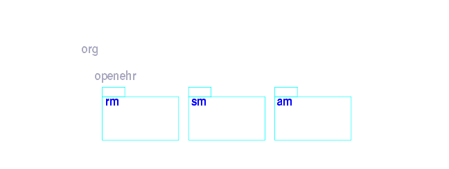
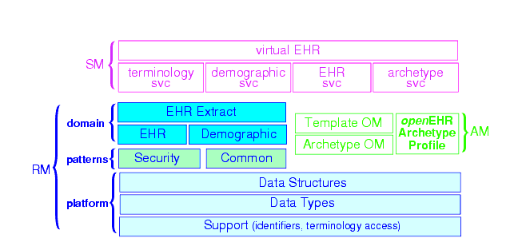
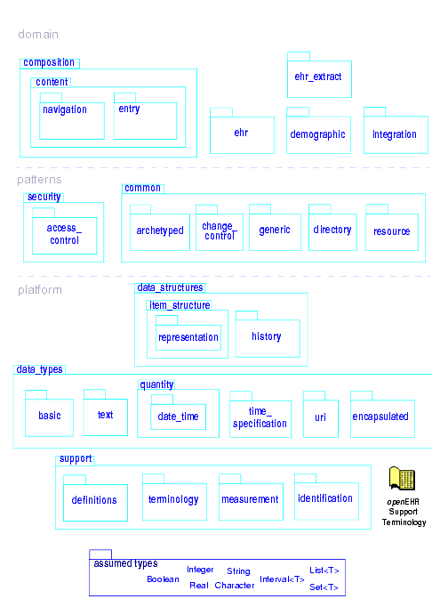
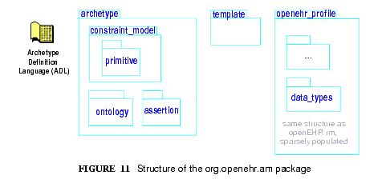
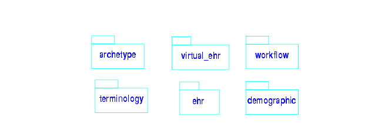

5 openEHR Package Structure
5.1 Overview
FIGURE 8 illustrates the overall package structure of the openEHR formal specifications. Three major packages are defined: rm, am and sm. All packages defining detailed models appear inside one of these outer packages, which may also be thought of as namespaces. They are conceptually defined within the org.openehr namespace, which can be represented in UML as further packages. In some implementation technologies (e.g. Java), the org.openehr namespace may actually be used within program texts.

One of the important design aims of openEHR is to provide a coherent, consistent and re-usable type system for scientific and health computing. Accordingly, a "common type platform" is defined in the lower part of the RM, providing identifiers, data types, data structures and various common design patterns that can be re-used ubiquitously in the upper layers of the RM, and equally in the AM and SM packages. FIGURE 9 illustrates the relationships between the outer packages and their main constituents. The common platform is shown at the bottom.

5.2 Reference Model (RM)
Each package defines a local context for definition of classes. FIGURE 10 illustrates the RM package structure. An informal division into "domain", "patterns" and "platform" is shown. The packages in the latter group are generic, and are used by all openEHR models, in all the outer packages. Together, they provide identification, access to knowledge resources, data types and structures, versioning semantics, and support for archetyping. The packages in the former group define the semantics of enterprise level health information types, including the EHR and demographics.
Each outer package in FIGURE 10 corresponds to one openEHR specification document1, documenting an "information model" (IM). The package structure will normally be replicated in all ITS expressions, e.g. XML schema, programming languages like Java, C# and Eiffel, and interoperability definitions like WSDL, IDL and .Net.

5.2.1 Package Overview
The following sub-sections provide a brief overview of the RM packages.
Support Information Model
This package describes the most basic concepts, required by all other packages, and is comprised of the Definitions, Identification, Terminology and Measurement packages. The semantics defined in these packages allow all other models to use identifiers and to have access to knowledge services like terminology and other reference data. The support package includes the special package assumed_types, describing what basic types are assumed by openEHR in external type systems; this package is a guide for integrating openEHR models proper into the type systems of implementation technologies.
Data Types Information Model
A set of clearly defined data types underlies all other models, and provides a number of general and clinically specific types required for all kinds of health information. The following categories of data types are defined in the data types reference model.
- Text: plain text, coded text, paragraphs.
- Quantities: any ordered type including ordinal values (used for representing symbolic ordered values such as "+", "++", "+++"), measured quantities with values and units, and so on.
- Date/times: date, time, date-time types, and partial date/time types.
- Encapsulated data: multimedia, parsable content.
- Basic types: boolean, state variable.
Data Structures Information Model
In most openEHR information models, generic data structures are used for expressing content whose particular structure will be defined by archetypes. The generic structures are as follows.
- Single: single items, used to contain any single value, such as a height or weight.
- List: linear lists of named items, such as many pathology test results.
- Table: tabular data, including unlimited and limited length tables with named and ordered columns, and potentially named rows.
- Tree: tree-shaped data, which may be conceptually a list of lists, or other deep structure.
- History: time-series structures, where each time-point can be an entire data structure of any complexity, described by one of the above structure types. Point and interval samples are supported.
Common Information Model
Several concepts recur in higher level packages. The classes LOCATABLE and ARCHETYPED provide the link between information and archetype models. The classes ATTESTATION and PARTICIPATION are generic domain concepts that appear in various reference models. The change_control package defines a formal model of change management and versioning which applies to any service that needs to be able to supply previous states of its information, in particular the demographic and EHR services. The key semantics of versioning in openEHR are described in section 8 on page 45.
Security Information Model
The Security Information Model defines the semantics of access control and privacy setting for information in the EHR.
EHR Information Model
The EHR IM defines the containment and context semantics of the concepts EHR, COMPOSITION, SECTION, and ENTRY. These classes are the major coarse-grained components of the EHR, and correspond directly to the classes of the same names in CEN EN13606:2005 and fairly closely to the "levels" of the same names in the HL7 Clinical Document Architecture (CDA) release 2.0.
EHR Extract Information Model
The EHR Extract IM defines how an EHR extract is built from COMPOSITIONs, demographic, and access control information from the EHR. A number of Extract variations are supported, including "full openEHR", a simplified form for integration with CEN EN13606, and an openEHR/openEHR synchronisation Extract.
Integration Information Model
The Integration model defines the class GENERIC_ENTRY, a subtype of ENTRY used to represent free-form legacy or external data as a tree. This Entry type has its own archetypes, known as "integration archetypes", which can be used in concert with clinical archetypes as the basis for a tool-based data integration system. See section 14 on page 79 for more details.
Demographics Information Model
The demographic model defines generic concepts of PARTY, ROLE and related details such as contact addresses. The archetype model defines the semantics of constraint on PARTYs, allowing archetypes for any type of person, organisation, role and role relationship to be described. This approach provides a flexible way of including the arbitrary demographic attributes allowed in the OMG HDTF PIDS standard.
Workflow Information Model (future)
Workflow is the dynamic side of clinical care, and consists of models to describe the semantics of processes, such as recalls, as well as any care process resulting from execution of guidelines.
5.3 Archetype Model (AM)
The openEHR am package contains the models necessary to describe the semantics of archetypes and templates, and their use within openEHR. These include ADL, the Archetype Definition Language (expressed in the form of a syntax specification), the archetype and template packages, defining the object-oriented semantics of archetypes and templates, and the openehr_profile package, which defines a profile of the generic archetype model defined in the archetype package, for use in openEHR (and other health computing endeavours). The internal structure of the am package is shown in FIGURE 11.

5.4 Service Model (SM)
The openEHR service model includes definitions of basic services in the health information environment, centred around the EHR. It is illustrated in FIGURE 12. The set of services actually included will undoubtedly evolve over time, so this diagram should not be seen as definitive.
Virtual EHR API
The virtual EHR API defines the fine-grained interface to EHR data, at the level of Compositions and below. It allows an application to create new EHR information, and to request parts of an existing EHR and modify them. This API enables fine-grained archetype-mediated data manipulation. Changes to the EHR are committed via the EHR service.
EHR Service Model
The EHR service model defines the coarse-grained interface to electronic health record service. The level of granularity is openEHR Contributions and Compositions, i.e. a version-control / change-set interface.
Part of the model defines the semantics of server-side querying, i.e. queries which cause large amounts of data to be processed, generally returning small aggregated answers, such as averages, or sets of ids of patients matching a particular criterion.

Archetype Service Model
The archetype service model defines the interface to online repositories of archetypes, and can be used both by GUI applications designed for human browsing as well as access by other software services such as the EHR.
Terminology Interface Model
The terminology interface service provides the means for all other services to access any terminology available in the health information environment, including basic classification vocabularies such as ICDx and ICPC, as well as more advanced ontology-based terminologies. Following the concept of division of responsibilities in a system-of-systems context, the terminology interface abstracts the different underlying architectures of each terminology, allowing other services in the environment to access terms in a standard way. The terminology service is thus the gateway to all ontology- and terminology-based knowledge services in the environment, which along with services for accessing guidelines, drug data and other "reference data" enables inferencing and decision support to be carried out in the environment.
1with the exception of the EHR and Composition packages, which are both described in the EHR Reference Model document.
|
openEHR Foundation http://www.openEHR.org |